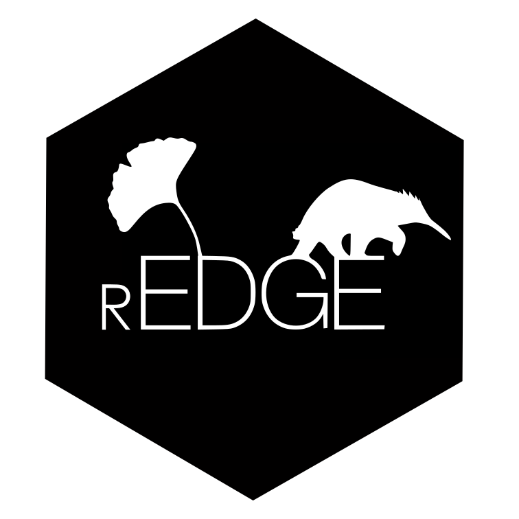
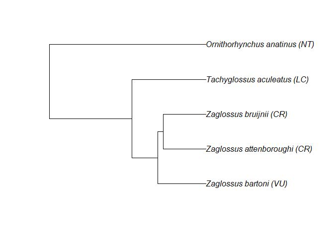

Package to calculate EDGE scores and more phylogenetic-based indicators in R

Documentation of website under current development…
The EDGE index
The EDGE index is a metric that aims to prioritize species’ conservation bsed on both theis phylogenetic singularity (i.e. ED, Evolutionaty Distinctiveness) and their extinction risk (GE, Globally Endangered). Based on this idea, several methods have been developed in order to calculate individual EDGE scores.
To illustrate the differences among methods ant their implementationn within rEDGE package, we will see some examples using monotremates (i.e. platypus and echidna species).

EDGE1
Index based on Isaac et al., 2007. This first approach used evolutionary distinctiveness (ED) and a transformation of extinction risk (GE) in which each IUCN Red List category is twice as probable of becoming extinct. The EDGE score is calculated ussing the following formula:
EDGE = log(1+ED)+GE∗log(2)
To calculate this index for monotremates, we just have to use the calculate_EDGE1 function specifying uot phylogenetic tree, and a table including all the tree’s species (in a clomn named species, and their respective IUCN category in a column named RL.cat). Note that all species must be included, so if there are species included on the tree and not evaluated, make sure to include them on the table wit a “NE” category.
EDGE1 <- calculate_EDGE1(tree = monotreme.tree,
table = monotreme.table,
sort.list = T # to get the list sorted by decreasing EDGE value
)
knitr::kable(EDGE1)| species | RL.cat | ED | EDGE |
|---|---|---|---|
| Zaglossus_attenboroughi | CR | 14.23723 | 5.496331 |
| Zaglossus_bruijnii | CR | 14.23723 | 5.496331 |
| Zaglossus_bartoni | VU | 14.75253 | 4.143296 |
| Ornithorhynchus_anatinus | NT | 29.83242 | 4.121714 |
| Tachyglossus_aculeatus | LC | 18.04178 | 2.946636 |
EDGE2
In order to take into account the extinction probability of closely related taxa as well as uncertainty in the extinction probability of species, Gumbs et al., 2023 designed a new methodology, termed EDGE2.
In this new approach, a probabilty of extinction is sampled from a continuous distribution based on the IUCN Red List category, and ED2 and EDGE” values can be calculated (develop more thoroughly…).
EDGE2 <- calculate_EDGE2(tree = monotreme.tree,
table = monotreme.table,
sort.list = T, # to get the list sorted by decreasing EDGE value
verbose = F)
knitr::kable(EDGE2)| species | RL.cat | TBL | pext | ED | EDGE |
|---|---|---|---|---|---|
| Zaglossus_bruijnii | CR | 8.147095 | 0.9999000 | 10.69954 | 10.6984729 |
| Zaglossus_attenboroughi | CR | 8.147095 | 0.9905879 | 10.72354 | 10.6226066 |
| Ornithorhynchus_anatinus | NT | 29.832422 | 0.1496076 | 29.83242 | 4.4631576 |
| Zaglossus_bartoni | VU | 9.177698 | 0.2818624 | 14.61081 | 4.1182375 |
| Tachyglossus_aculeatus | LC | 14.111567 | 0.0350753 | 18.50054 | 0.6489122 |
As this EDGE score is iteration dependant (i.e. there is a random factor in the sampling of extinction probabilty), a set of EDGE2 values can be calculated and averaged posteriorly. This multiple calculation is performed by calculate_EDGE2_multiple function, which allows to parallelize in order to speed computation times. In this example we are calculating EDGE scores 50 times and averaging the results after.
EDGE2mult <- calculate_EDGE2_multiple(tree = monotreme.tree,
table = monotreme.table,
n.iter = 50,
parallelize = TRUE,
n.cores = 10
)
#> [1] "Seed has been set to: 39380337"
# Now we summarise table results...
EDGE2mult_summ <- EDGE2mult |>
bind_rows() |>
group_by(species) |>
summarise(RL.cat = paste0(unique(RL.cat)),
TBL = mean(TBL ),
pext = mean(pext),
ED = mean(ED ),
EDGE = mean(EDGE) ) |>
arrange(desc(EDGE))
knitr::kable(EDGE2mult_summ)| species | RL.cat | TBL | pext | ED | EDGE |
|---|---|---|---|---|---|
| Zaglossus_bruijnii | CR | 8.147095 | 0.9240231 | 10.34608 | 9.5572687 |
| Zaglossus_attenboroughi | CR | 8.147095 | 0.9180105 | 10.35906 | 9.5082837 |
| Ornithorhynchus_anatinus | NT | 29.832422 | 0.1284080 | 29.83242 | 3.8307210 |
| Zaglossus_bartoni | VU | 9.177698 | 0.2408466 | 14.02165 | 3.3645653 |
| Tachyglossus_aculeatus | LC | 14.111567 | 0.0493775 | 17.30895 | 0.8474662 |